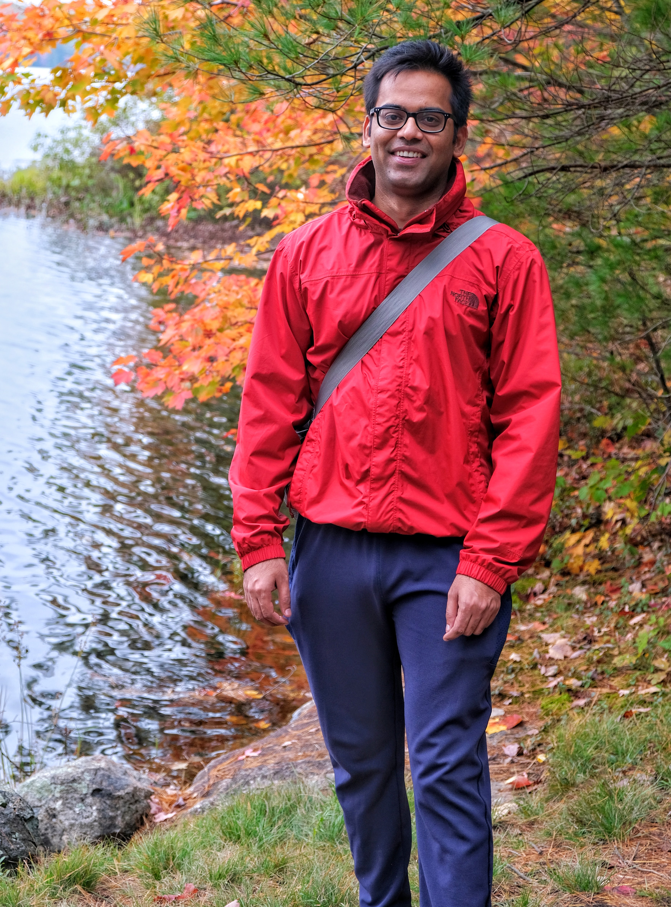

Hemant Katiyar
- Senior Engineer, IonQ
Hello!
I am currently working for IonQ as a Senior Engineer.
I received my PhD in Physics-Quantum Information from the Institute for Quantum Computing, University of Waterloo in October 2019 under the supervision of Prof. Raymond Laflamme.
Publications
Google Scholar Profile- Experimental activation of strong local passive states with quantum information. arXiv:2203.16269 (2022)
- Fast Simulation of Magnetic Field Gradients for Optimization of Pulse Sequences. arXiv 2006.10133 (2020)
- Exploration of an augmented set of Leggett-Garg inequalities using a noninvasive continuous-in-time velocity measurement. Phys Rev A 100 042325 (2019)
- Gradient-based closed-loop quantum optimal control in a solid-state two-qubit system. Phys Rev A 98 052341 (2018)
- Enhancing quantum control by bootstrapping a quantum processor of 12 qubits. npj Quantum Information 3, 45 (2017)
- Experimentally superposing two pure states with partial prior knowledge. Phys. Rev. A 95, 022334 (2017)
- Experimental violation of the Leggett-Garg inequality in a 3-level system. New J Phys. 19 023033 (2017)
- NMR investigation of contextuality in a quantum harmonic oscillator via pseudospin mapping. EPL 113 (2), 20003 (2016)
- NMR quantum information processing. Electron Spin Resonance (ESR) Based Quantum Computing, Springer (2016)
- Ancilla assisted measurements on quantum ensembles: General protocols and applications. arXiv 1509.04506 (2015)
- Freezing a quantum magnet by repeated quantum interference: An experimental realization. Phys. Rev. B 90, 174407 (2014)
- Estimating Franck-Condon factors using an NMR quantum processor. Phys. Rev. A 90, 022303 (2014)
- Violation of Entropic Leggett-Garg Inequality in Nuclear Spin Ensembles. Phys. Rev. A 87, 052102 (2013)
- Multipartite quantum correlations reveal frustration in a quantum Ising spin system. Phys. Rev. A 88, 022312 (2013)
- Inversion of moments to retrieve joint probabilities in quantum sequential measurements. Phys. Rev. A 87, 052118 (2013)
- Evolution of Quantum Discord and its Stability in Two-Qubit NMR Systems. Phys. Rev. A 86, 012309 (2012)
Curriculum Vitae & Resume
Download CV PDF version Download resume PDF versionWork
- IonQ, Canada (Jan 2023 - Present)
- Institute for Quantum Computing, University of Waterloo (Aug 2022 – Dec 2022)
- Institute for Quantum Computing, University of Waterloo (Oct 2019 – Aug 2022)
Education
- Institute for Quantum Computing, University of Waterloo (2014–2019) Thesis title: Control techniques in spin based quantum computation.
- Indian Institute of Science Education and Research Pune, India (2012–2014)
- Indian Institute of Science Education and Research Pune, India (2007–2012) Thesis title: Estimation of Quantum Correlations in Nuclear Spin Ensembles.
Scholarships / Awards
- Marie Curie Graduate Student Award (Spring 2014 - Winter 2018)
- International Doctoral Student Award (Spring 2014 - Winter 2018)
- Graduate Research Award (Spring 2014 - Spring 2019)
- Science Graduate Experience Award (5 Terms between 2014-2017)
- Innovation in Science Pursuit for Inspired Research (INSPIRE) scholarship (2007-2012)
Technical Skills
- Programming Languages: Python, MATLAB, Mathematica
- Markup Languages: HTML, CSS, LaTeX
- Operating Systems: Linux, Windows, macOS
- Tools: Git, GitHub
- Other Software: Bruker TopSpin, Photoshop, Dreamweaver, Illustrator
Teaching Experience
- PHYS468 - Introduction to the Implementation of Quantum Information Processing (2020, 2021)
Taught students how to use an NMR quantum computer and helped them perform their first quantum experiment (60 Hrs). - PHYS242 - Electricity and Magnetism 1 (2021)
Taught weeks 5 and 6. - QIC750 - Implementation of Quantum Information Processing (2019)
Teaching assistant; gave NMR lab introduction to students. - PHYS234 - Quantum Physics 1 (2016, 2017)
Full time teaching assistant. - PHYS280 - Introduction to Biophysics (2017)
Full time teaching assistant. - PHYS121 - Mechanics (2014, 2015)
Full time teaching assistant. - PHYS364 - Mathematical Physics 1 (2015)
Full time teaching assistant.
Scientific Outreach
- Undergraduate School on Experimental Quantum Information Processing (2015-2019)
Taught all aspects of performing NMR experiments, helped students familiarize with experimental setup, and engaged them in the physics behind the experiments.
Talks, Posters, Conferences, and Schools
- 2017: School & Conference, Machine Learning, University of KwaZulu-Natal, South Africa.
- 2016: School, Machine Learning, Perimeter Institute, Canada.
- 2015: Poster, University of Guelph, Canada.
- 2013: Poster & Conference, NMR Society meeting at IIT Bombay.
- 2012: Poster & Conference, Int. Conf. on Quantum Information and Quantum Computing at IISc Bangalore.
- 2012: Mini Winter School on Quantum Information and Computation.
- 2012: Talk, "On Quantum Discord", CQIQC Summer School, IISc Bangalore.
- 2011: Conference, Int. School on Quantum and Nano Computing Systems, Agra, India.